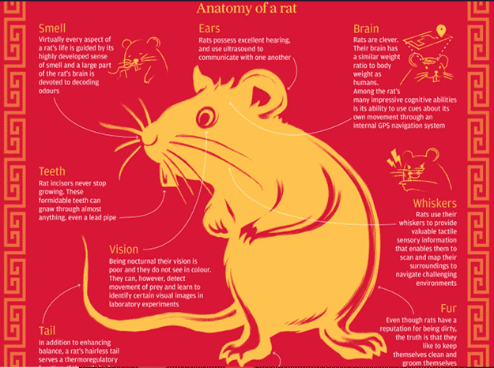
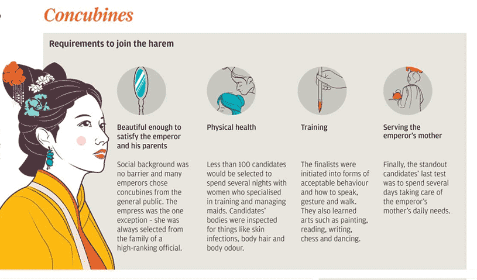
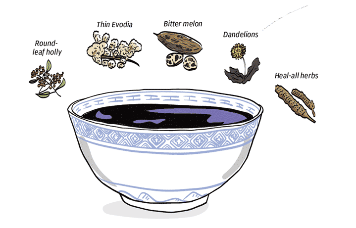
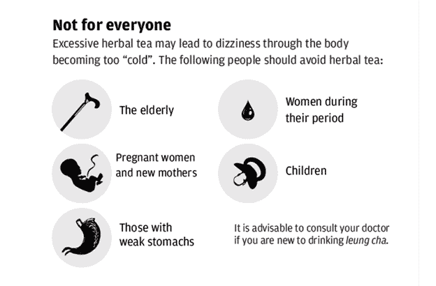
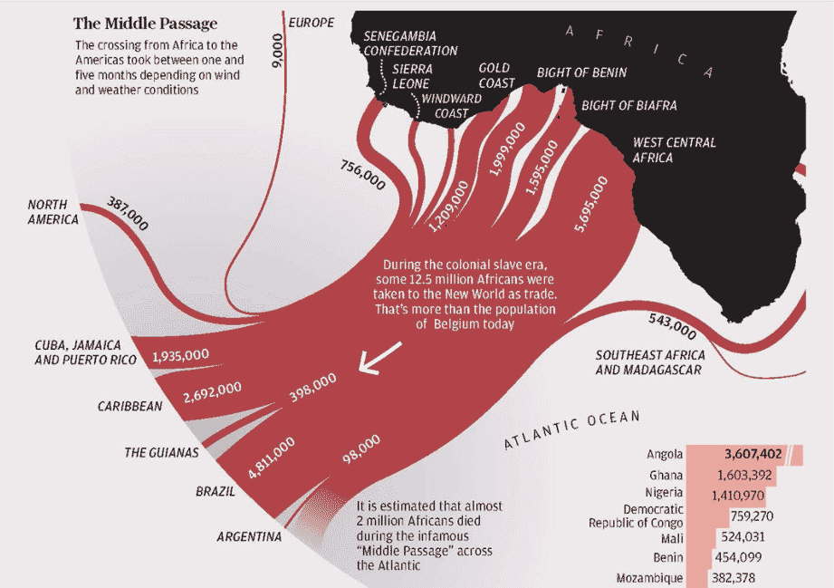
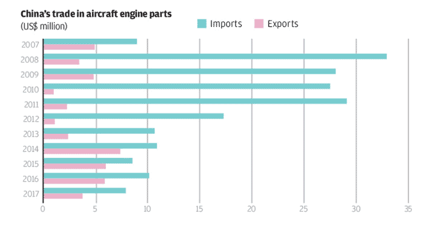
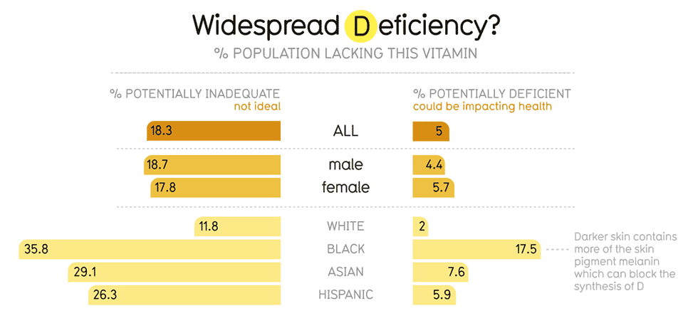
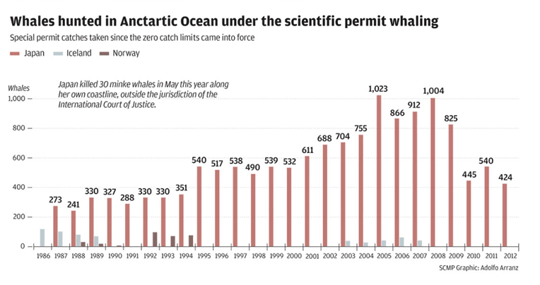

Información en gráficos figurativos

RAT RACE (2020)
Publicado en South China Morning Post.

Women near the emperator (2018)
Publicado en South China Morning Post.

HERBAL TEA (2018)
Publicado en South China Mornin Post.

HERBAL TEA (2018)
Publicado en South China Morning Post.
Información en gráficos no figurativos

The slave trade (2020)
Publicado en South China Morning Post.

In pursuit of a dream (2018)
Publicado en South China Morning Post.

VITAMINA D
Publicado en Information is Beautiful.

The hunters and the hunted (2014)
Publicado en South China Morning Post.